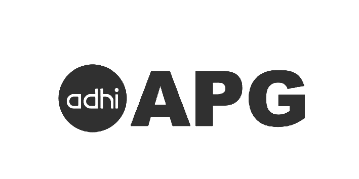

Mitra & Partner
Logo Partner Kami





Standar internasional untuk kebutuhan kesehatan Anda
Layanan gawat darurat tersedia 24 jam dengan tim medis profesional
Dokter spesialis berpengalaman siap membantu
Kamar perawatan nyaman dengan fasilitas lengkap
Pemeriksaan lengkap dengan hasil akurat
Fasilitas radiologi modern
Layanan vaksinasi untuk anak & dewasa
Lihat ketersediaan antrean poliklinik dan kamar tidur secara langsung melalui display digital kami.
Lihat Display Antrean
Online • AI Agent 24/7